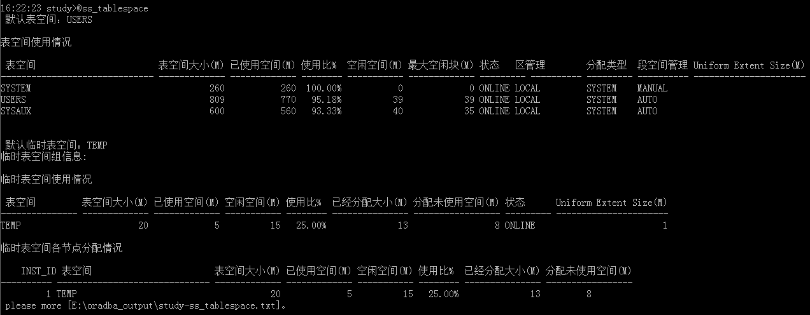
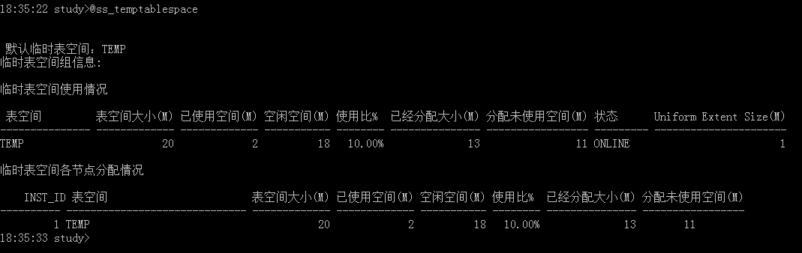
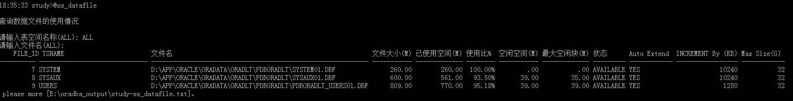
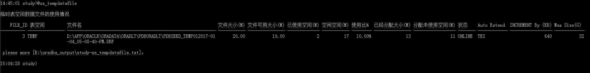
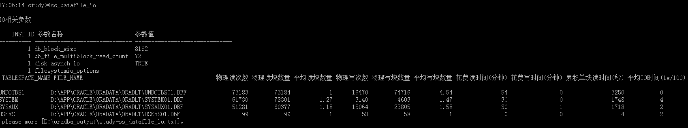
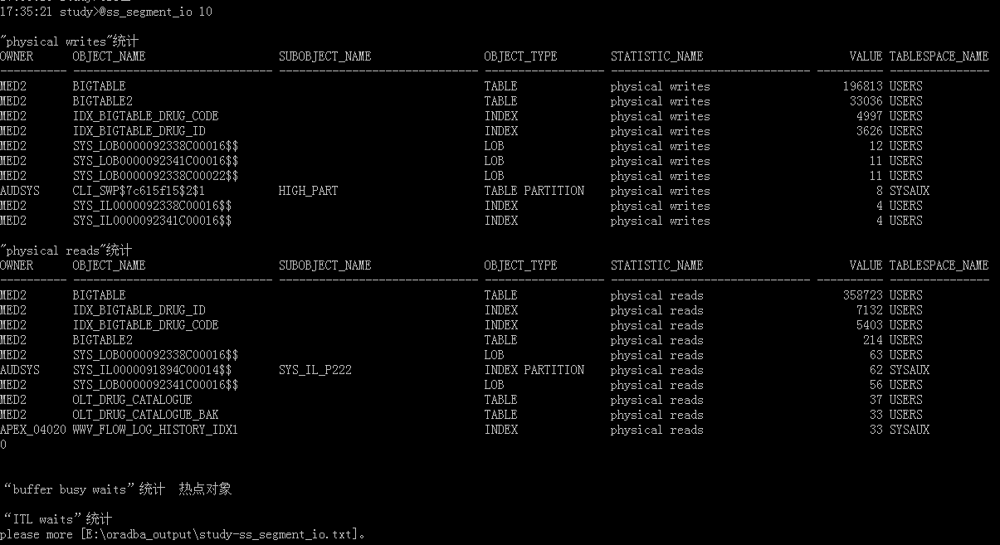

相关脚本**
ss_asm.sql ss_datafile.sql ss_table_size.sql ss_tempdatafile.sql ss_undo.sql ss_asmfile.sql ss_segment.sql ss_tablespace.sql ss_temptablespace.sql seg_advisor.sql ss_datafile_io.sql ss_segment_io.sql ss_onlinelog.sql
ss_tablespace.sql查询表空间使用情况；支持RAC，显示临时表空间在各节点的分配情况。
16:50:14 study>@ss_tablespace
默认表空间：USERS
表空间使用情况
表空间 表空间大小(M) 已使用空间(M) 使用比% 空闲空间(M) 最大空闲块(M) 状态 区管理 分配类型 段空间管理 Uniform Extent Size(M)
--------- ------------- ----------- -------- ----------- ----------- --------- ------- --------- ---------- ----------------------
SYSTEM 260 260 100.00% 0 0 ONLINE LOCAL SYSTEM MANUAL
USERS 809 770 95.18% 39 39 ONLINE LOCAL SYSTEM AUTO
SYSAUX 600 560 93.33% 40 35 ONLINE LOCAL SYSTEM AUTO
默认临时表空间：TEMP
临时表空间组信息:
临时表空间使用情况
表空间 表空间大小(M) 已使用空间(M) 空闲空间(M) 使用比% 已经分配大小(M) 分配未使用空间(M) 状态 Uniform Extent Size(M)
------ ------------- ----------- ----------- -------- ------------- --------------- --------- ----------------------
TEMP 20 5 15 25.00% 13 8 ONLINE 1
临时表空间各节点分配情况
INST_ID 表空间 表空间大小(M) 已使用空间(M) 空闲空间(M) 使用比% 已经分配大小(M) 分配未使用空间(M)
---------- ------ ------------- ------------- ----------- -------- --------------- --------------
1 TEMP 20 5 15 25.00% 13 8
please more [E:\oradba_output\study-ss_tablespace.txt]。
详细输出内容：表空间使用情况
ss_temptablespace.sql该脚本支持RAC集群中，每个节点占用临时表空间情况。
18:35:22 study>@ss_temptablespace
默认临时表空间：TEMP
临时表空间组信息:
临时表空间使用情况
表空间 表空间大小(M) 已使用空间(M) 空闲空间(M) 使用比% 已经分配大小(M) 分配未使用空间(M) 状态 Uniform Extent Size(M)
--------------- ------------- ------------- ----------- -------- --------------- ----------------- --------- ----------------------
TEMP 20 2 18 10.00% 13 11 ONLINE 1
临时表空间各节点分配情况
INST_ID 表空间 表空间大小(M) 已使用空间(M) 空闲空间(M) 使用比% 已经分配大小(M) 分配未使用空间(M)
---------- ------------------------------ ------------- ------------- ----------- -------- --------------- -----------------
1 TEMP 20 2 18 10.00% 13 11
ss_undo.sql
18:10:57 study>@ss_undo
UNDO表空间相关参数
INST_ID 参数名称 参数取值
---------- ------------------------------ --------------------------------------------------------
1 undo_management AUTO
1 undo_retention 900
1 undo_tablespace UNDOTBS1
UNDO表空间信息
TABLESPACE_NAME STATUS BLOCK_SIZE RETENTION
------------------------------ --------- ---------- -----------
UNDOTBS1 ONLINE 8192 NOGUARANTEE
UNDO表空间使用情况
表空间 表空间大小(M) 已使用空间(M) 使用比% 空闲空间(M) 最大空闲块(M)
------------------------------ ------------- ------------- -------- ------------ -------------
UNDOTBS1 645.00 185.00 28.68% 460.00 459.00
UNDO表空间:回滚段分布情况(按状态分)
表空间名称 回滚段状态 回滚段数量
------------------------------ ---------- ----------
UNDOTBS1 ONLINE 10
UNDO表空间:空间分布情况(按状态分)
表空间名称 回滚段区间状 空间大小(M)
------------------------------ ------------ ------------
UNDOTBS1 ACTIVE 108.25
UNDOTBS1 EXPIRED 14.69
UNDOTBS1 UNEXPIRED 61.31
open [E:\oradba_output\study-ss_undo.txt]...
18:17:04 study>@sess_undo 10
当前事务使用UNDO表空间的情况(占用undo空间最多前10条数据)
INST_ID 表空间名称 回滚段名称 事物占用undo块数量 事物占用undo空间(M) SEG_ACTIVE_SPACE
---------- ----------- ------------------------ ------------------ ------------------- -----------
1 UNDOTBS1 _SYSSMU5_3484600714$ 12971 101.34 104.13
1 UNDOTBS1 _SYSSMU6_38 363 2.84 4.13详细输出内容：undo使用输出日志
ss_datafile.sql计算表空间数据文件使用情况
18:35:33 study>@ss_datafile
查询数据文件的使用情况
请输入表空间名称(ALL): ALL
请输入文件名(ALL):
FILE_ID TSNAME 文件名 文件大小(M) 已使用空间(M) 使用比% 空闲空间(M) 最大空闲块(M) 状态 Auto Extend INCREMENT By (KB) Max Size(G)
---------- ------------------------------ ------------------------------------------------------------ ----------- ------------- -------- ----------- ------------- --------- ------------ ----------------- ------------
7 SYSTEM D:\APP\ORACLE\ORADATA\ORADLT\PDBORADLT\SYSTEM01.DBF 260.00 260.00 100.00% .00 .00 AVAILABLE YES 10240 32
8 SYSAUX D:\APP\ORACLE\ORADATA\ORADLT\PDBORADLT\SYSAUX01.DBF 600.00 561.00 93.50% 39.00 35.00 AVAILABLE YES 10240 32
9 USERS D:\APP\ORACLE\ORADATA\ORADLT\PDBORADLT\PDBORADLT_USERS01.DBF 809.00 770.00 95.18% 39.00 39.00 AVAILABLE YES 1280 32
please more [E:\oradba_output\study-ss_datafile.txt]。
详细输出内容：数据文件使用情况日志
ss_tempdatafile.sql临时表空间数据文件的使用情况
14:45:01 study>@ss_tempdatafile
临时表空间数据文件的使用情况
FILE_ID 表空间 文件名 文件大小(M) 文件可用大小(M) 已使用空间(M) 空闲空间(M) 使用比% 已经分配大小(M) 分配未使用空间(M) 状态 Auto Extend INCREMENT By (KB) Max Size(G)
---------- --------------- ------------------------------------------------------------ ----------- --------------- ------------- ----------- -------- --------------- ----------------- ------- ------------ ----------------- ------------
3 TEMP D:\APP\ORACLE\ORADATA\ORADLT\PDBORADLT\PDBSEED_TEMP012017-01 20.00 19.00 2 17 10.00% 13 11 ONLINE YES 640 32
-04_05-08-40-PM.DBF
please more [E:\oradba_output\study-ss_tempdatafile.txt]。
详细输出内容：临时表空间文件使用情况日志
ss_onlinelog.sql显示联机日志文件信息和联机日志相关的等待事件
18:55:55 study>@ss_onlinelog
log buffer 大小:
INST_ID 参数名称 大小
---------- ------------------------------ ------------------------------
1 log_buffer 4.84M
联机日志信息
Log status:
UNUSED - Online redo log has never been written to. This is the state of a redo log that was just added, or just after a RESETLOGS, when it is not the current redo log.
CURRENT - Current redo log. This implies that the redo log is active. The redo log could be open or closed.
ACTIVE - Log is active but is not the current log. It is needed for crash recovery. It may be in use for block recovery. It may or may not be archived.
CLEARING - Log is being re-created as an empty log after an ALTER DATABASE CLEAR LOGFILE statement. After the log is cleared, the status changes to UNUSED.
CLEARING_CURRENT - Current log is being cleared of a closed thread. The log can stay in this status if there is some failure in the switch such as an I/O error writing the new log header.
INACTIVE - Log is no longer needed for instance recovery. It may be in use for media recovery. It might or might not be archived.
INVALIDATED - Archived the current redo log without a log switch.
GROUP# THREAD# SEQUENCE# FILESIZE(M) MEMBERS ARCHIVED STATUS FIRST_CHANGE# FIRST_TIME
---------- ---------- ---------- ----------- ---------- -------- ---------------- ------------------- -------------------
1 1 94 50 1 NO INACTIVE 3505299 2017-06-21 16:39:31
2 1 95 50 1 NO INACTIVE 3505337 2017-06-21 16:39:47
3 1 96 50 1 NO CURRENT 3519914 2017-06-22 15:00:35
联机日志文件信息
LogFile status:
INVALID - File is inaccessible
STALE - File's contents are incomplete
DELETED - File is no longer used
null - File is in use
GROUP# STATUS TYPE MEMBER IS_RECOVERY_DEST_FILE
---------- ------- ------- ------------------------------------------------------------ ----------------------
1 ONLINE D:\APP\ORACLE\ORADATA\ORADLT\REDO01.LOG NO
2 ONLINE D:\APP\ORACLE\ORADATA\ORADLT\REDO02.LOG NO
3 ONLINE D:\APP\ORACLE\ORADATA\ORADLT\REDO03.LOG NO
联机日志文件等待事件
TIME_WAITED : NUMBER Total amount of time waited for the event (in hundredths of a second)
AVERAGE_WAIT: NUMBER Average amount of time waited for the event (in hundredths of a second)
INST_ID EVENT TOTAL_WAITS TOTAL_TIMEOUTS TIME_WAITED AVERAGE_WAIT WAIT_CLASS
---------- ----------------------------------------- ----------- -------------- ----------- ------------ -------------
1 log file switch (checkpoint incomplete) 21 0 1156 55.05 Configuration
1 log buffer space 3 0 65 21.7 Configuration
1 log file switch completion 49 0 569 11.61 Configuration
1 log file sync 117 0 21 .18 Commit
please more [E:\oradba_output\study-ss_onlinelog.txt]。
详细输出内容：联机日志文件信息日志
ss_table_size.sql计算表占用空间大小(包括index,lob字段)
16:42:31 study>@ss_table_size
请指定表的拥有者(owner)
Enter value for 1: MED2
表名称(table_name)
Enter value for 2: bigtable
指定的拥有者： MED2
指定的表名称： BIGTABLE
表占用空间合计大小(包括index,lob字段)
占用空间大小（M） USED_SPACE_
----------------- --------------------
580.38 580.38 Mb
表占用空间明细
SEGMENT_NAME SEGMENT_TYPE TABLESPACE_NAME 占用空间大小（M） USED_SPACE_
------------------------------ ----------------- ----------------- ----------------- -------------
BIGTABLE TABLE USERS 511.00 511 Mb
IDX_BIGTABLE_DRUG_CODE INDEX USERS 40.00 40 Mb
IDX_BIGTABLE_DRUG_ID INDEX USERS 29.00 29 Mb
SYS_LOB0000092338C00022$$ LOBSEGMENT USERS .13 128 Kb
SYS_LOB0000092338C00016$$ LOBSEGMENT USERS .13 128 Kb
SYS_IL0000092338C00016$$ LOBINDEX USERS .06 64 Kb
SYS_IL0000092338C00022$$ LOBINDEX USERS .06 64 Kb
LOB字段信息
SEGMENT_NAME LOB字段名称 对应LOB索引名称 TABLESPACE_NAME
------------------------------ ---------------- ---------------------------- ---------------------
SYS_LOB0000092338C00022$$ TEXT SYS_IL0000092338C00022$$ USERS
SYS_LOB0000092338C00016$$ DRUG_PHOTO SYS_IL0000092338C00016$$ USERS
please more [E:\oradba_output\study-ss_table_size_MED2_bigtable.txt]。详细输出内容：Table占用空间信息日志
ss_segemnt.sql计算segment的空间使用情况。支持的对象有：TABLE;TABLE PARTITION;TABLE SUBPARTITION;INDEX;INDEX PARTITION;INDEX SUBPARTITION;CLUSTER;LOB;LOB PARTITION;LOB SUBPARTITION
16:43:06 study>@ss_segment 请指定要检查空间使用情况的对象信息 输入对象的拥有者(owner): med2 对象类型取值：[TABLE;TABLE PARTITION;TABLE SUBPARTITION;INDEX;INDEX PARTITION;INDEX SUBPARTITION;CLUSTER;LOB;LOB PARTITION;LOB SUBPARTITION] 输入对象的类型(segment_type): table 输入对象的名称(segment_name): bigtable 输入对象的分区名称(partition_name): 对象MED2.BIGTABLE的使用情况如下： FS1 Blocks(0 to 25% free space ) = 1 Bytes = 8192 FS2 Blocks(25% to 50% free space) = 672 Bytes = 5505024 FS3 Blocks(50% to 75% free space) = 0 Bytes = 0 FS4 Blocks(75% to 100% free space)= 30947 Bytes = 253517824 Full Blocks = 32921 Bytes =269688832 Unformatted Blocks = 508 Bytes =4161536 ----------------------------- Total blocks............................65408 Total bytes.............................535822336 Total MBytes............................511 Unused blocks (above HWM)...............0 Unused bytes (above HWM)................0 Last used extent file id................9 Last used extent block_id...............97536 Last used block.........................1024 please more [E:\oradba_output\study-ss_segment.txt]。
详细输出日志：segment占用空间日志
seg_advisor.sql分析segment对象空间碎片并给出建议支持的对象类型：
- TABLESPACE (分析表空间中的所有segment对象)
- TABLE;TABLE PARTITION;TABLE SUBPARTITION;INDEX;INDEX PARTITION;INDEX SUBPARTITION;CLUSTER;LOB;LOB PARTITION;LOB SUBPARTITION
15:12:24 study>@seg_advisor
请指定要分析空间使用建议的对象信息
注意：如指定分析分区表或分区index,将会分析所有的分区.
输入对象的拥有者(owner): med2
对象类型取值：
(1) TABLESPACE
(2) [TABLE;TABLE PARTITION;TABLE SUBPARTITION;INDEX;INDEX PARTITION;INDEX SUBPARTITION;CLUSTER;LOB;LOB PARTITION;LOB SUBPARTITION]
输入对象的类型(segment_type): table
输入对象的名称(segment_name): bigtable
输入对象的分区名称(partition_name|subpartition name):
当segment_type为TABLE时，是否同时分析INDEX和LOB字段(true):
分析[TABLE]对象:MED2.BIGTABLE
联带分析index:
INDEX_NAME INDEX_TYPE TABLESPACE_NAME PARTITIONED
------------------------------ ------------------------------ -------------------- ------------
SYS_IL0000092338C00016$$ LOB USERS NO
SYS_IL0000092338C00022$$ LOB USERS NO
IDX_BIGTABLE_DRUG_CODE NORMAL USERS NO
IDX_BIGTABLE_DRUG_ID NORMAL USERS NO
联带分析LOB字段:
COLUMN_NAME SEGMENT_NAME TABLESPACE_NAME PARTITIONED
------------------------------ ------------------------------ --------------------- ------------
TEXT SYS_LOB0000092338C00022$$ USERS NO
DRUG_PHOTO SYS_LOB0000092338C00016$$ USERS NO
正在分析,请耐心等候．．．
分析完成，任务信息如下:
TASK_ID TASK_NAME STATUS
---------- ----------------------------------------------------------------------- ----------
51 DLT_SEGMENTADV_201706221525 COMPLETED
建议信息如下：
TABLESPACE_NAME : USERS
SEGMENT_OWNER : MED2
SEGMENT_NAME : BIGTABLE
SEGMENT_TYPE : TABLE
PARTITION_NAME :
ALLOCATED_SPACE : 535822336
USED_SPACE : 309012944
RECLAIMABLE_SPACE : 226809392
CHAIN_ROWEXCESS : 0
IOREQPM : 0
IOWAITPM : 0
IOWAITPR : 0
RECOMMENDATIONS : Enable row movement of the table MED2.BIGTABLE and perform shrink, estimated savings is 226809392 bytes.
C1 : alter table "MED2"."BIGTABLE" shrink space
C2 : alter table "MED2"."BIGTABLE" shrink space COMPACT
C3 : alter table "MED2"."BIGTABLE" enable row movement
TASK_ID : 51
MESG_ID : 36
-----------------
please more [E:\oradba_output\study-seg_advisor.txt]。详细输出日志：segment对象分析顾问日志
ss_datafile_io.sql统计数据文件的IO信息
17:06:14 study>@ss_datafile_io
IO相关参数
INST_ID 参数名称 参数值
---------- ------------------------------ ------------------------------
1 db_block_size 8192
1 db_file_multiblock_read_count 72
1 disk_asynch_io TRUE
1 filesystemio_options
TABLESPACE_NAME FILE_NAME 物理读次数 物理读块数量 平均读块数量 物理写次数 物理写块数量 平均写块数量 花费读时间(分钟)
--------------- -------------------------------------------------- ---------- ------------ ------------ ---------- ------------ ------------ ----------------
UNDOTBS1 D:\APP\ORACLE\ORADATA\ORADLT\UNDOTBS01.DBF 73183 73184 1 16470 74716 4.54 54
SYSTEM D:\APP\ORACLE\ORADATA\ORADLT\SYSTEM01.DBF 61730 78301 1.27 3140 4603 1.47 30
SYSAUX D:\APP\ORACLE\ORADATA\ORADLT\SYSAUX01.DBF 51281 60377 1.18 15064 23805 1.58 30
USERS D:\APP\ORACLE\ORADATA\ORADLT\USERS01.DBF 99 99 1 58 58 1 0
please more [E:\oradba_output\study-ss_datafile_io.txt]。
详细输出日志：数据文件IO统计日志
ss_segment_io.sql:算计segment对象physical writes、physical reads、buffer busy waits、ITL waits排名前几的信息Usage：@ss_segment_io
17:35:21 study>@ss_segment_io 10 "physical writes"统计 OWNER OBJECT_NAME SUBOBJECT_NAME OBJECT_TYPE STATISTIC_NAME VALUE TABLESPACE_NAME ---------- ------------------------------ ------------------------------ ------------------ ------------------------------ ---------- --------------- MED2 BIGTABLE TABLE physical writes 196813 USERS MED2 BIGTABLE2 TABLE physical writes 33036 USERS MED2 IDX_BIGTABLE_DRUG_CODE INDEX physical writes 4997 USERS MED2 IDX_BIGTABLE_DRUG_ID INDEX physical writes 3626 USERS MED2 SYS_LOB0000092338C00016$$ LOB physical writes 12 USERS MED2 SYS_LOB0000092341C00016$$ LOB physical writes 11 USERS MED2 SYS_LOB0000092338C00022$$ LOB physical writes 11 USERS AUDSYS CLI_SWP$7c615f15$2$1 HIGH_PART TABLE PARTITION physical writes 8 SYSAUX MED2 SYS_IL0000092338C00016$$ INDEX physical writes 4 USERS MED2 SYS_IL0000092341C00016$$ INDEX physical writes 4 USERS "physical reads"统计 OWNER OBJECT_NAME SUBOBJECT_NAME OBJECT_TYPE STATISTIC_NAME VALUE TABLESPACE_NAME ---------- ------------------------------ ------------------------------ ------------------ ------------------------------ ---------- --------------- MED2 BIGTABLE TABLE physical reads 358723 USERS MED2 IDX_BIGTABLE_DRUG_ID INDEX physical reads 7132 USERS MED2 IDX_BIGTABLE_DRUG_CODE INDEX physical reads 5403 USERS MED2 BIGTABLE2 TABLE physical reads 214 USERS MED2 SYS_LOB0000092338C00016$$ LOB physical reads 63 USERS AUDSYS SYS_IL0000091894C00014$$ SYS_IL_P222 INDEX PARTITION physical reads 62 SYSAUX MED2 SYS_LOB0000092341C00016$$ LOB physical reads 56 USERS MED2 OLT_DRUG_CATALOGUE TABLE physical reads 37 USERS MED2 OLT_DRUG_CATALOGUE_BAK TABLE physical reads 33 USERS APEX_04020 WWV_FLOW_LOG_HISTORY_IDX1 INDEX physical reads 33 SYSAUX 0 “buffer busy waits”统计 热点对象 “ITL waits”统计 please more [E:\oradba_output\study-ss_segment_io.txt]。

详细输出日志：segment对象IO统计日志
ss_asm.sql、ss_asmfile.sql监控ASM的空间信息：
- ASM磁盘组空间的使用情况
- ASM磁盘组文件整体占用空间情况
- ASM磁盘空间的使用情况
- ASM磁盘组中文件信息